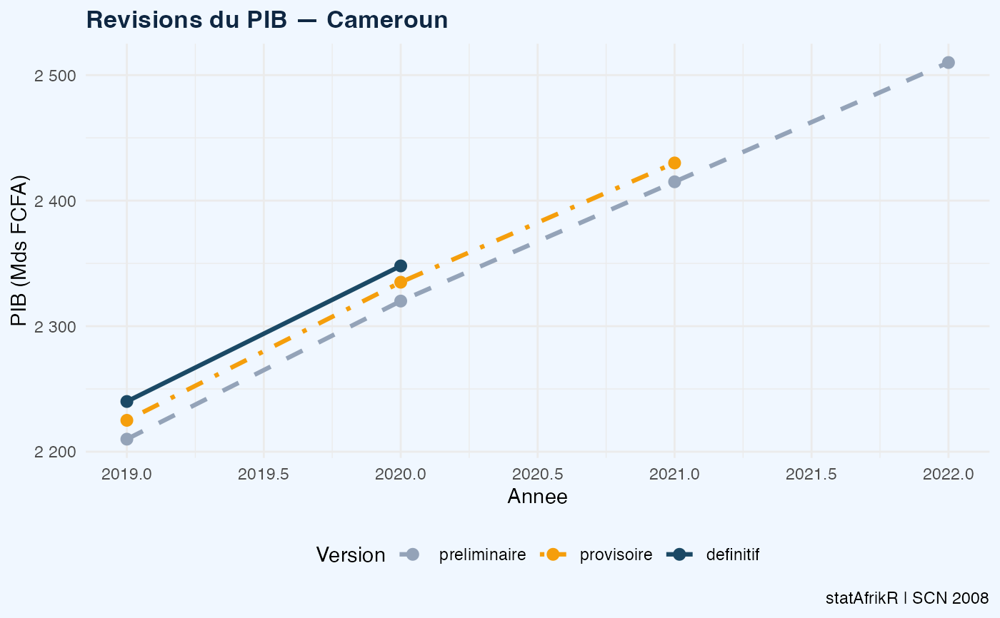

Analyse les revisions entre les estimations preliminaires, provisoires et definitives du PIB. Produit un tableau et un graphique de suivi conforme aux bonnes pratiques de communication des INS.
Utilisation
suivre_revisions_pib(
donnees,
var_annee = "annee",
var_version = "version",
var_valeur = "valeur",
pays = "Pays",
unite = "Mds FCFA"
)Arguments
- donnees
data.frame – Donnees avec colonnes annee, version, valeur. Versions attendues : "preliminaire", "provisoire", "definitif"
- var_annee
character – Variable annee. Defaut : "annee"
- var_version
character – Variable version du PIB. Defaut : "version"
- var_valeur
character – Variable valeur du PIB. Defaut : "valeur"
- pays
character – Nom du pays. Defaut : "Pays"
- unite
character – Unite. Defaut : "Mds FCFA"
Exemples
revisions <- data.frame(
annee = rep(2019:2022, each=3),
version = rep(c("preliminaire","provisoire","definitif"), 4),
valeur = c(2210,2225,2240, 2320,2335,2348,
2415,2430,NA, 2510,NA,NA),
stringsAsFactors = FALSE
)
suivre_revisions_pib(revisions, pays="Cameroun", unite="Mds FCFA")
#> === Revisions du PIB — Cameroun ===
#> 2019 : Def=2 240 Rev prel->prov: +0.68% Rev prov->def: +0.67%
#> 2020 : Def=2 348 Rev prel->prov: +0.65% Rev prov->def: +0.56%
#> 2021 : Rev prel->prov: +0.62%
#> 2022 :
#> $pays
#> [1] "Cameroun"
#>
#> $unite
#> [1] "Mds FCFA"
#>
#> $revisions
#> # A tibble: 4 × 6
#> annee preliminaire provisoire definitif rev_prel_prov rev_prov_def
#> <int> <dbl> <dbl> <dbl> <dbl> <dbl>
#> 1 2019 2210 2225 2240 0.68 0.67
#> 2 2020 2320 2335 2348 0.65 0.56
#> 3 2021 2415 2430 NA 0.62 NA
#> 4 2022 2510 NA NA NA NA
#>
#> $donnees
#> annee version valeur version_fac
#> 1 2019 preliminaire 2210 preliminaire
#> 2 2019 provisoire 2225 provisoire
#> 3 2019 definitif 2240 definitif
#> 4 2020 preliminaire 2320 preliminaire
#> 5 2020 provisoire 2335 provisoire
#> 6 2020 definitif 2348 definitif
#> 7 2021 preliminaire 2415 preliminaire
#> 8 2021 provisoire 2430 provisoire
#> 9 2021 definitif NA definitif
#> 10 2022 preliminaire 2510 preliminaire
#> 11 2022 provisoire NA provisoire
#> 12 2022 definitif NA definitif
#>
#> $graphique

#>
#> attr(,"class")
#> [1] "saf_revision_pib"